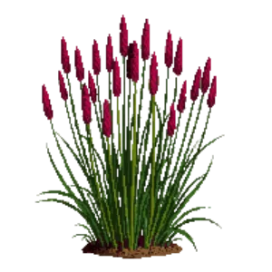

Japanese Blood Grass
Imperata cylindrica 'Red Baron'

Japanese Blood Grass is a grass for edging, mid-border, suited to full sun and loam or sandy soil, flowering varies by climate.
| Type | Grass |
|---|---|
| Mature height | 45 cm |
| Spread | 30 cm |
| Aspect | full sun |
| Foliage | Deciduous |
| Hardiness | USDA 5a-9a, RHS H4 |
| Pollinator-friendly | No |
| Pet-safe | Not confirmed |
Where to use it in a border
At around 45 cm, it sits best along the front edge, where a low, spreading habit reads best. Give it about 30 cm of room to spread, roughly 3 to the metre when planted in a drift. It is hardy across USDA zones 5a to 9a and rated H4 by the RHS, so check it suits your area before planting.
It appears in our lists of full sun, sandy soil.
Flowering through the year
JFMAMJJASOND
Good companions
Plants that share its conditions and style, chosen to complement its place in the border:
- Black mondo grassto edge in front
- Fatsia 'Spider's Web'for height behind it
- Heavenly Bamboofor height behind it
- Hydrangea 'Limelight'for height behind it
- Japanese Araliafor height behind it
- Japanese forest grass 'Aureola'to edge in front
Garden styles
See Japanese Blood Grass set in a full border, with spacing and companions worked out for your own conditions, in Border Builder.